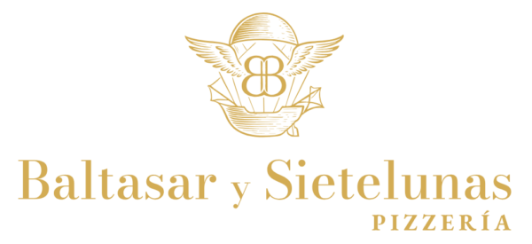

Baltasar & Sietelunas
La pizza como lenguaje · Pizzería napolitana en Cali

🍕Ver el menú
💬Pedir por WhatsApp
⭐Déjanos tu reseña en Google
📸Síguenos en Instagram
📍Encuéntranos en Maps
🛵Pedir a domicilio
HORARIOS
Lun–Vie 5:00 PM – 10:00 PM
Sábado 3:00 PM – 10:00 PM
Domingo Brunch 9:30 AM
C.C Lago Verde, Cl. 16a #122 – 70
Local E3 · Barrio Pance, Cali